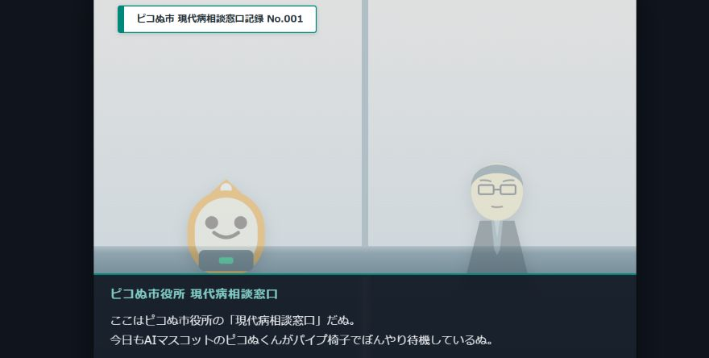

- 症例 No.001 「エレベーターの話」
- 症例 No.002 「うどんの話」
- 症例 No.003 「ベンチの話」
- 症例 No.004 「蜂の巣の話」
- 症例 No.005 「しんどい日の話」
- 症例 No.006 「野球の話」
- 症例 No.007 「恋愛の話」
- 症例 No.008 「ピコピコの話」
-
症例 No.009 「近日公開」
※記録の閲覧後、市役所食堂のあたたかいうどん一杯分の『食券』が交付されます。
※カレーうどんへの変更は+100円、天ぷらうどんへの変更は+200円です。
※ネギは好きなだけ自分で入れるシステムです。
※現代病相談窓口は、「不調ではあるが、何科にかかればよいか分からない」「症状として説明しにくい」といったご相談を受け付ける市の窓口です。 詳しくはこちら 現代病相談窓口
※カレーうどんへの変更は+100円、天ぷらうどんへの変更は+200円です。
※ネギは好きなだけ自分で入れるシステムです。
※現代病相談窓口は、「不調ではあるが、何科にかかればよいか分からない」「症状として説明しにくい」といったご相談を受け付ける市の窓口です。 詳しくはこちら 現代病相談窓口